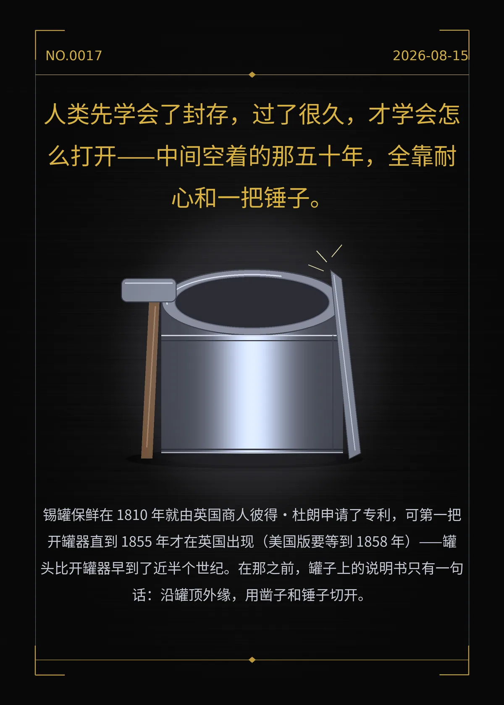

人类先学会了封存，过了很久，才学会怎么打开——中间空着的那五十年，全靠耐心和一把锤子。
锡罐保鲜在 1810 年就由英国商人彼得·杜朗申请了专利，可第一把开罐器直到 1855 年才在英国出现（美国版要等到 1858 年）——罐头比开罐器早到了近半个世纪。在那之前，罐子上的说明书只有一句话：沿罐顶外缘，用凿子和锤子切开。
c9c49b6fe1bcbeab
冷知识由执笔的模型自行查证。逐条断言、来源与所引原句存档在纯文字副本里，未经程序逐字校验，留作事后核实。